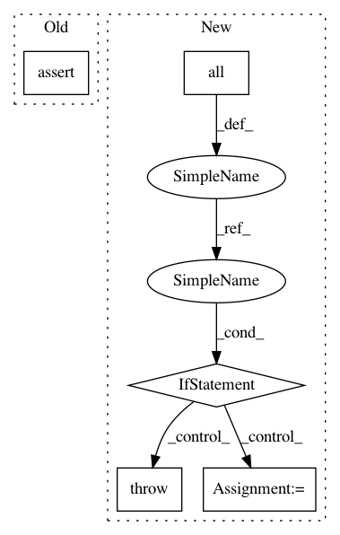

7c5daf825bcb84e6f750a6d6fad3a2626c4ea5ec,pyntcloud/io/las.py,,get_color_dtype,#,13
Before Change
def get_color_dtype(data, column_names):
color_data_types = [data["points"][column_name].dtype for column_name in column_names]
assert len(set(color_data_types)) == 1
return color_data_types[0]
def convert_color_to_dtype(data, output_dtype):
After Change
def get_color_dtype(data, column_names):
has_color = all(column in data["points"] for column in column_names)
if has_color:
color_data_types = [data["points"][column_name].dtype for column_name in column_names]
if len(set(color_data_types)) > 1:
raise TypeError(f"Data types of color values are inconsistent: got {color_data_types}")
color_data_type = color_data_types[0]
else:
color_data_type = None
return color_data_type
def convert_color_to_dtype(data, output_dtype):
In pattern: SUPERPATTERN
Frequency: 3
Non-data size: 5
Instances
Project Name: daavoo/pyntcloud
Commit Name: 7c5daf825bcb84e6f750a6d6fad3a2626c4ea5ec
Time: 2020-10-06
Author: sebastian.bullinger@iosb.fraunhofer.de
File Name: pyntcloud/io/las.py
Class Name:
Method Name: get_color_dtype
Project Name: daavoo/pyntcloud
Commit Name: 7c5daf825bcb84e6f750a6d6fad3a2626c4ea5ec
Time: 2020-10-06
Author: sebastian.bullinger@iosb.fraunhofer.de
File Name: pyntcloud/io/las.py
Class Name:
Method Name: get_color_dtype
Project Name: jadore801120/attention-is-all-you-need-pytorch
Commit Name: cb413bcf7b58223c6c4335f2eaaf3dc53c0b0c53
Time: 2019-12-05
Author: jadore801120@gmail.com
File Name: train.py
Class Name:
Method Name: main
Project Name: GPflow/GPflow
Commit Name: 0d97bc0bb3db40017f1278d6c1f292ea0f789ab0
Time: 2020-03-27
Author: art.art.v@gmail.com
File Name: gpflow/optimizers/mcmc.py
Class Name: SamplingHelper
Method Name: __init__